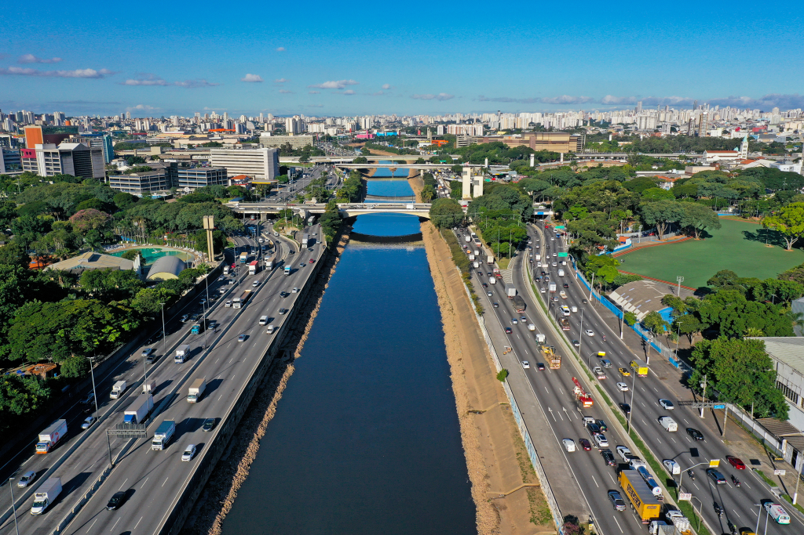
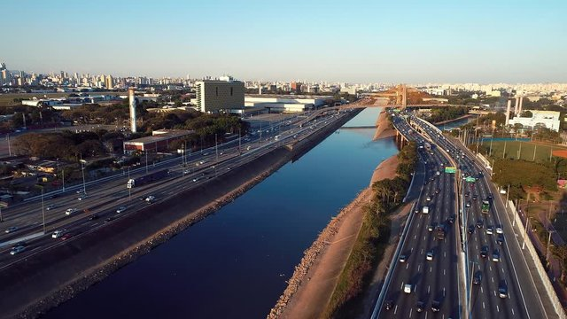
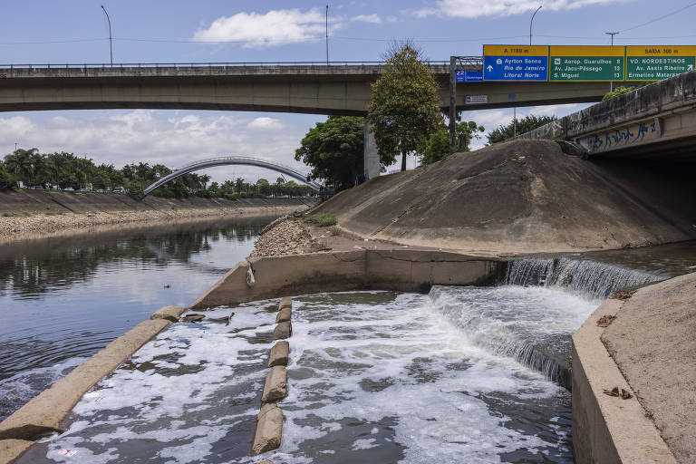
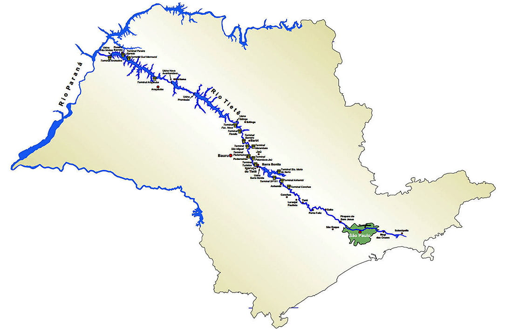

O Rio Tietê é um curso de água brasileiro conhecido nacionalmente por atravessar, ao longo de seus 1 100 quilômetros de extensão, cobrindo praticamente todo o estado de São Paulo de leste a oeste, o rio Tietê nasce no município de Salesópolis, na Serra do Mar, atravessando 1.100 km indo em direção ao interior até desaguar no rio Paraná, no município de Itapura, na divisa com o Mato Grosso do Sul.
(Link)Para proteger a nascente do rio mais paulista, o DAEE criou o Parque Nascentes do Tietê. O local conta com 1,34 milhão de metros quadrados, vista para nascente e um espelho d’água onde os frequentadores podem beber a água do rio direto de sua nascente.
(Link)Contexto histórico e sujeira: Muitos desconhecem, mas o Rio Tietê nem sempre carregou o estigma da poluição. Pelo contrário: Em meados do século XVIII, suas águas eram tão limpas e navegáveis que serviram como a principal rota para as expedições dos bandeirantes. Foi por meio desse caminho que esses exploradores expandiram as fronteiras do território brasileiro, semeando cidades e conectando o interior paulista às vastidões do Mato Grosso.
(Link)Com o grande avanço da cidade em termos populacionais e industriais, todo esgoto começou a ser jogado em suas águas e é assim até os dias de hoje. Contudo, o cenário começou a mudar em 1990 com a mobilização popular 'Tietê Vivo', que deu origem ao projeto estadual focado na redução gradativa dos agentes poluidores. A iniciativa segue ativa e apresenta avanços consistentes dia após dia. Hoje, engenheiros e especialistas mantêm o otimismo, acreditando que, em um futuro próximo, o rio poderá finalmente resgatar sua antiga vitalidade e pureza.
(LInk)


